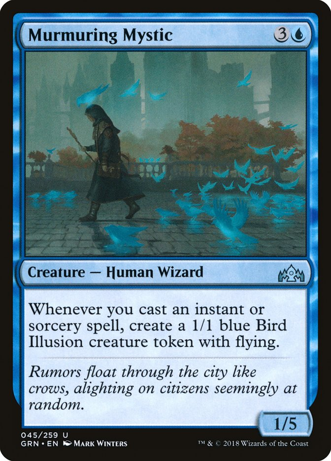
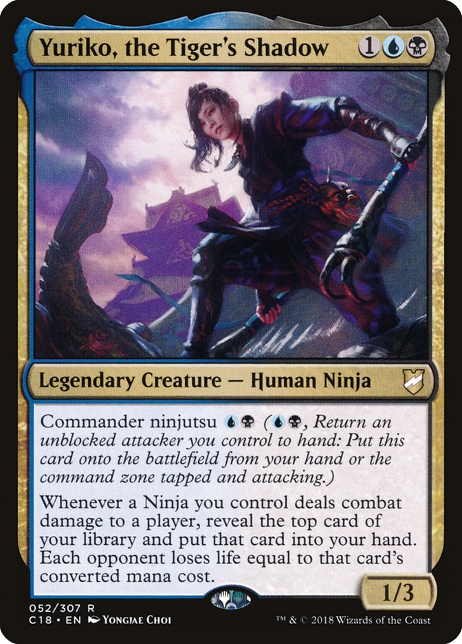

Personal Info
Intro
My name is Kai Tanaka. I grew up in the maritimes and most of my education was in french. I am currently double majoring in comp sci and philosophy while working as a digital archival assistant at the library.

Hobbies
I believe myself to be mostly proficient in versatility, as my hobbies span across a range of fields. With the notable exception of creative fields, which is an area in which I would love to improve in.
| Hobby | Achievement |
|---|---|
| Piano | Regional Recitals |
| Fencing | Provincial Win |
| Football | Provincial Win |
| Volleyball | District Win |
| Card Gaming | International Tournament |
| Board Gaming | Nothing really I just like it. |
Summer Plans
I am currently putting some money aside from my employment, with the goal of hopefully being able to take a trip this upcoming summer before I start working in order to visit some friends that I have not seen since various moves have driven us apart. Currently the target destinations would include:
- Toronto
- Calgary
- Vancouver
- Portland (well technically a nearby small town named Eugene)
MTG filler.
And now, because I still need a table, I will list off my personal ranking for how much I enjoy playing the 2-colour combinations of Magic the Gathering. With a couple additional photos to boot. The ranking will be listed from favourite to least-favourite.
| Colour 1 | Colour 2 |
|---|---|
| Red | Blue |
| Red | Black |
| Blue | Black |
| White | Blue |
| White | Black |
| White | Red |
| Green | Blue |
| Black | Green |
| Red | Green |
| Green | White |
I seem to have a clear preference for non-creature based colours.
This was the titular card of the deck I first won events with, which I titled "Bird Wizards".
This was the commander of the first commander deck I built, waaaaay back around when she first came out, circa 2019 or roundabouts.